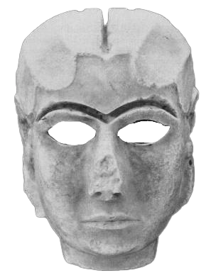

Ishtar in Mesopotamian religion is the name attributed to the goddess of war and sexual love, but in fact is also a more complex character, surrounded in myth by death and disaster, a goddess of contradictory connotations and forces—fire and fire-quenching, rejoicing and tears, fair play and enmity. We gave to the project the name of the goddess to convey in it all its mythological auras and implications.
Ishtar delves into the relationship between erotic and violent content and the instrumentalization of them by countries' governance bodies , offering the first Digital Experience structured as Neurobiological Experiment, accessible by your webcam.
The digital experience will start as the user will answer to some question, that we ask for a better profiling which is vital for the final report document.
2.After that he’ll be guided through the procedure of calibration of the webcam, deputed in tracking the ocular movement on the user’s screen during the whole visual part of the experience.
3.The user will be in charge of what kind of content he's gonna watch from the beginning and also during the whole experiment duration by changing the whole tags search for each category.
4.Finally those focal map, added to the profiling data, added to all the clickEvent will build the final report.
The main point of the project aims to be a reflection on how violence and pornography pass from subversive or denunciation tools, to tools conveyed and used by power as a form of fear, entertainment, addiction or precisely as a vehicle for a message.
Today's erotic contents are often used in the meaning of liberating the body, while engaging in violent videos can become an important tool of denunciation, a warning. However, in the large web basin, these contents are also used by power, advertising and political regimes, not in a subversive key, but as entertainment, like in industrial pornography, or as tools of fear, control and exploitation as in the case of violence.
Massive use of this kind of images, creates a sort of addiction in the public, but also an ideological subtext that is often misinterpreted when related to the flow of information.
The link between eroticism and pornography put on split screen is the scientific discovery that states that there is a neurological link between the two at the stimuli level.
Going deeper, we can combine advertising and entertainment with eroticism, and violence and we can combine fear, the normalization of it, the instrumental and strategic use by power and the feeling of danger. It gives to think - for example - of how among the constant lockdowns we have experienced all the riots and violent acts in the world, as well as the feeling of perennial danger has become a form of masochistic entertainment.
Linking these two video forms takes precisely on this meaning: creating a sort of reflection in the viewer on how certain contents are viewed and which value we’re attribuing attributed to them. The adoperated videos become a stimuli in both a reflection and a subversion of those logics.